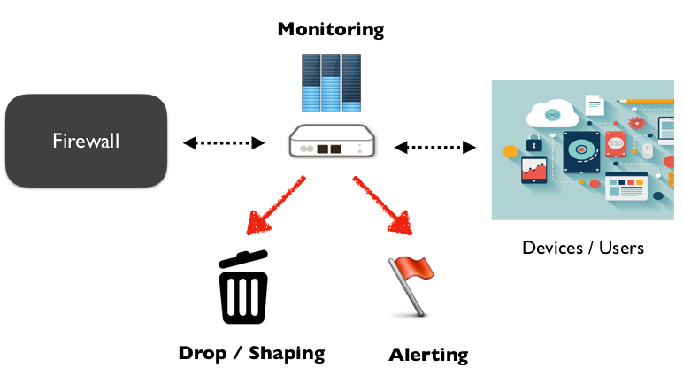
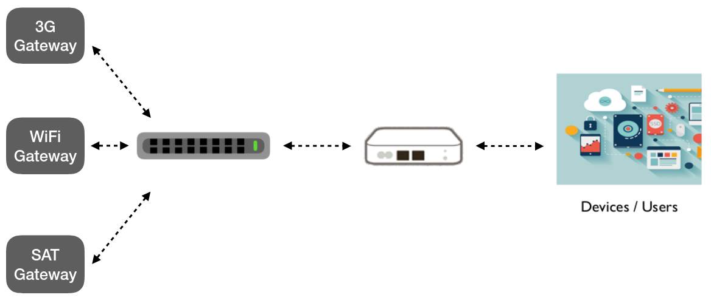

Обзор
Обеспечение безопасности устройств является сложной задачей в современную эпоху, затрагивающей крупные корпоративная сеть, а также небольшая домашняя сеть. В домашних сетях часто любые знания об устройствах, подключенных к сети, или о пропускной способности сети. используется. С другой стороны, безопасность в корпоративных сетях традиционно требуется для брандмауэров, где это часто приводит к использованию статических правил, нацеленных на некоторые специфические устройства, которыми сложно управлять в постоянно меняющейся сети. Более того, поскольку BYOD практика становится все более распространенной, это важно для сетевой администратор, чтобы знать, какие устройства в данный момент подключены к сети, и динамически применять к ним правила.
Независимо от среды, общие требования к мониторингу сети все еще те же:
Обнаруживайте и точно идентифицируйте устройства, подключенные к сети, а также тип устройства и блокировку/предупреждение о подключении новых устройств.
Получите представление о сетевом трафике, чтобы узнать, кто больше всех говорит и как используется полоса пропускания
Регулирование/блокировка протоколов, потребляющих полосу пропускания, которые снижают производительность сети.
Заблаговременно выявляйте возможные угрозы и блокируйте устройство/связь. трафика и уведомить администратора
nEdge — это ntop ответ на обозначенные проблемы.
Давайте проанализируем, как работает nEdge в некоторых случаях использования.
Малый бизнес
Бизнес-среды характеризуются разнообразными сетевыми топологиями и приборы. Решение, требующее изменения топологии сети, может быть дорого и может создавать конфликты с существующими устройствами.
Развернув nEdge в мост режиме никаких изменений топологии не требуется. Более того, nEdge не мешает работе других сетевых устройств. Его можно развернуть в различных точках сети для обеспечения видимости и защиты выбранный сегмент сети.


Интеграция nEdge в среде малого бизнеса
Важно отметить, что nEdge предназначен для защиты устройств на край сети. Он не заменяет межсетевые экраны, а лишь дополняет их.
Некоторые интересные функции nEdge для сетевого администратора — это возможность генерировать оповещения, когда новые устройства подключаются к сети, и, возможно, блокировать опасные протоколы, такие как протоколы обмена файлами, трафик SSL без сертификата и VPN-туннели.

Чтобы получить полную видимость сети, включив Сетевое обнаружение также можно будет обнаруживать и правильно идентифицировать простаивающие устройства, такие как принтеры. точным образом.
Отель
В отеле среднего размера обычно имеется множество точек доступа, которыми могут воспользоваться гости. Точки доступа подключаются к Интернет-шлюзу для обеспечения подключения к Интернету.
Обычно тот же Интернет-шлюз используется и персоналом отеля. поэтому он может перестать отвечать на запросы, когда какой-либо гость злоупотребляет пропускной способностью сети или когда подключено много клиентов.
Проблему можно легко решить, используя nEdge в мост режим, как показано на картинка.

Интеграция nEdge в отеле
Будет использоваться следующая конфигурация nEdge:
Captive-портал включен.
По умолчанию класс пропускной способности гарантирует пропускную способность 65%
Медленный проход класс пропускной способности гарантирует пропускную способность 30%
Пользователь Персонал создается с помощью По умолчанию класс установил резервную политику
Пользователь Гости создается с помощью Медленный проход класс установил резервную политику
Эта настройка гарантирует, что у сотрудников будет зарезервировано 65% пропускной способности для использования. при необходимости, при этом позволяя гостям работать на полной пропускной способности, когда персонал простаивает.
Более того, благодаря nEdge гостевая пропускная способность будет справедливо разделена, так что один гость не сможет монополизировать сеть. Для дальнейшего контроля, некоторые протоколы, потребляющие полосу пропускания, такие как Bittorrent, также можно отключить.
Поставщик подключения
В этом случае мы специально проанализируем некоторые расширенные функции nEdge. разработан для частного провайдера подключения к Интернету. Эта среда характеризуется наличием ряда Интернет-шлюзов с различными скорость и стоимость.


Подключение nEdge к нескольким шлюзам для обеспечения подключения к Интернету
В качестве примера предположим, что есть 3 разных плана клиентов, которыми нужно управлять:
Базовый пользователь: может использовать только шлюз Wi-Fi. Также будет применяться ограничение скорости в 500 Кбит.
Обычный пользователь: по умолчанию использует шлюз Wi-Fi, но также может использовать 3G, если Wi-Fi недоступен.
Золотой пользователь: может использовать любой из доступных шлюзов, и ему зарезервировано 70 % доступной пропускной способности.
Желаемое поведение заключается в том, что пользователь всегда должен использовать менее дорогой доступный шлюз. исходя из своего плана. Если такой шлюз становится недоступным, пользователям уровня Normal/Gold следует использовать альтернативный шлюз, пока он остается недоступным, а затем переключитесь обратно на менее дорого, когда есть.
Развертывание nEdge позволяет маршрутизатор режиме, приведенный выше сценарий можно настроить следующим образом:
Шлюзы 3G, Wi-Fi, и СБ создаются и настраиваются
Политика маршрутизации Только Wi-Fi создан и настроен только для разрешения Wi-Fi
Политика маршрутизации Wi-Fi или 3G создается и настраивается с высоким приоритетом Wi-Fi, и 3G как низкий приоритет.
Политика маршрутизации Любой создан и настроен с высоким приоритетом Wi-Fi, 3G как низкий приоритет и SAT как более низкий приоритет.
По умолчанию ставка класса установлена на уровне 70%
Медленный проход Пропускная способность каждого класса хоста установлена на уровне 500 Кбит/с.
Пользователь Базовый создается, с Медленный проход резервная политика
Пользователь Нормальный создается, с Медленный проход резервная политика
Пользователь Золото создается, с По умолчанию резервная политика
Клиентские устройства теперь можно вручную назначать созданным пользователям на основе их план. Для более сложных настроек можно создать несколько пользователей и автоматически назначен через Пленный портал аутентификация.
nEdge позаботится о подаче заявки аварийное переключение и балансировка нагрузки правила согласно указанным приоритетам. Он будет отслеживать состояние шлюзов и переключаться на шлюзы с более высоким приоритетом (менее дорогие или более производительные), если они доступны.
Шлюзы могут быть подключены либо к коммутатору, либо напрямую к устройству nEdge. если доступно несколько сетевых интерфейсов.
Программная конфигурация
ntopng можно настроить программно без какого-либо взаимодействия с GUI.
Это особенно полезно для тех, кто хочет интегрировать ntopng Преимущество в собственных автоматизированных решениях. В качестве примера рассмотрим следующий случай.
Поставщик подключения к Интернету, например ACME ISP, продает три Интернет-профиля: basic, gold и platinum.
Поставщик услуг хочет настроить профили следующим образом:
basic: Обеспечить подключение к Интернету на очень медленной скорости и запретить потоковую передачу на YouTubegold: Обеспечить подключение к Интернету на медленной скорости и ограничить потоковое видео YouTube до очень медленной скоростиplatinum: Обеспечить подключение к Интернету на максимальной скорости. без и ограничения
Интернет-провайдер ACME продает интернет-профили клиентам через свою платформа. После успешной покупки платформа связывает Mac адрес устройства клиента, который хочет получить доступ к Интернету для купленный профиль. Таким образом, ассоциации могут быть примерно такими:
Mac-адрес
AA:BB:CC:DD:EE:11купилbasicпрофильMac-адрес
AA:BB:CC:DD:EE:22купилgoldпрофильMac-адрес
AA:BB:CC:DD:EE:33купилplatinumпрофиль
На этом этапе интернет-провайдер ACME хочет программно настроить ntopng Edge для
Создайте три полиса: базовый, золотой и платиновый.
Свяжите каждый увиденный Mac-адрес с правильной политикой на основе купленного профиля.
Политики можно создавать программно, обслуживая ntopng Edge a конфигурация JSON, которая загружается при запуске от интернет-провайдера ACME. как настроено в http_bridge_conf_utils.HTTP_BRIDGE_CONFIGURATION_URL.
{
"users": {
"basic" : {
"full_name": "Basic Internet Profile",
"default_policy": "slower_pass",
"policies" : {
"YouTube": "drop"
}
},
"gold" : {
"full_name": "Gold Internet Profile",
"default_policy": "slow_pass",
"policies" : {
"YouTube": "slower_pass"
}
},
"platinum" : {
"full_name": "Platinum Internet Profile",
"default_policy": "pass",
"policies" : {
}
}
}
}
После запуска ntopng Edge готов связать Mac-адреса.
он следит за созданной политикой. Но как интернет-провайдер ACME может определить ntopng Edge
такие ассоциации? Это довольно просто: интернет-провайдеру ACME достаточно просто связаться с
специальная веб-страница ntopng Edge
/lua/admin/manage_pool_members.lua и отправьте JSON с
ассоциации с использованием HTTP POST.
JSON, который сообщает ntopng Edge о трех приведенных выше ассоциациях, выглядит следующим образом:
{
"associations" : {
"AA:BB:CC:DD:EE:11" : {"group" : "basic", "connectivity" : "pass"},
"AA:BB:CC:DD:EE:22" : {"group" : "gold", "connectivity" : "pass"},
"AA:BB:CC:DD:EE:33" : {"group" : "platinum", "connectivity" : "pass"}
}
}
Отныне ntopng Edge сможет правильно связать трафик, которым обмениваются любые из трех Mac-адресов, указанных выше, с правильно настроенная политика.
Каждый раз, когда новый клиент совершает покупку, Интернет-провайдер ACME может отправить новую ассоциацию от JSON до ntopng Edge во время выполнения.
А что делать, если срок покупки истек? Что, если AA:BB:CC:DD:EE:33
больше не имеет права доступа в Интернет с помощью platinum
профиль? Как интернет-провайдер ACME может сообщить ntopng Edge об удалении
AA:BB:CC:DD:EE:33 из platinum политика? Опять же, это
довольно просто, поскольку специальная веб-страница ntopng Edge не только принимает
ассоциации, он допускает и диссоциации. Чтобы отсоединить
участнику полиса ACME ISP, нужно будет только перейти на reject тот
connectivity как следует.
{
"associations" : {
"AA:BB:CC:DD:EE:33" : {"group" : "platinum", "connectivity" : "reject"},
}
}
Подробное объяснение того, как программно настроить ntopng Эдж можно найти по адресу Сегментация сети.
Чтобы понять, как настроить медленные и очень медленные скорости для определенных данные значения см. Контроль пропускной способности.